Intimação no seu e-mail
Número, partes, data e link da publicação. No mesmo dia.
Chegou agora
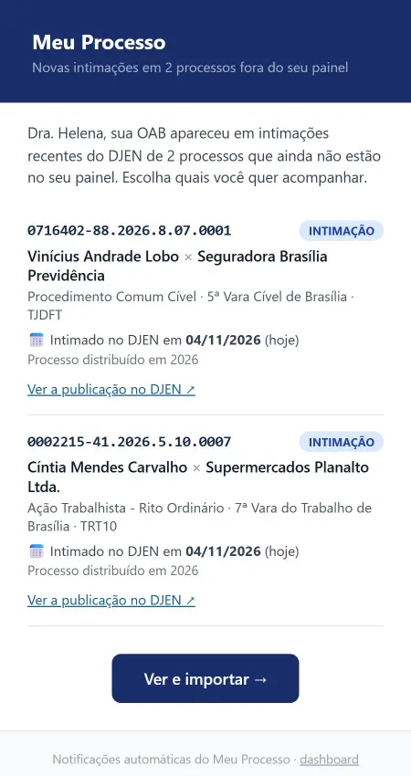
30 dias grátis para testar tudo, sem cartão
O Meu Processo organiza processos, prazos, tarefas e honorários do seu escritório num lugar só, e acompanha mais de 90 tribunais por você. Saiu intimação, o aviso chega no seu e-mail.
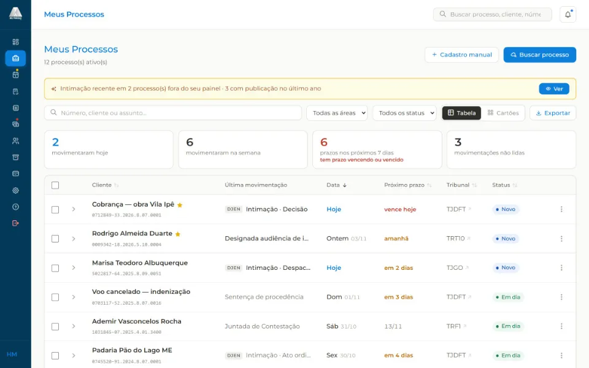
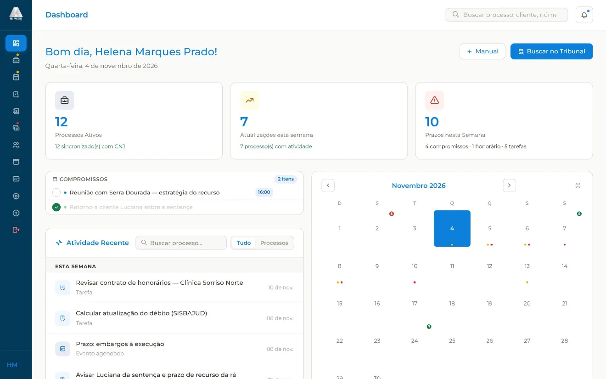
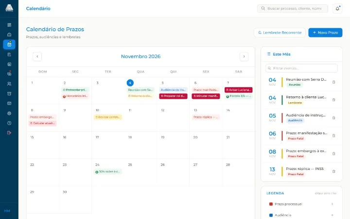
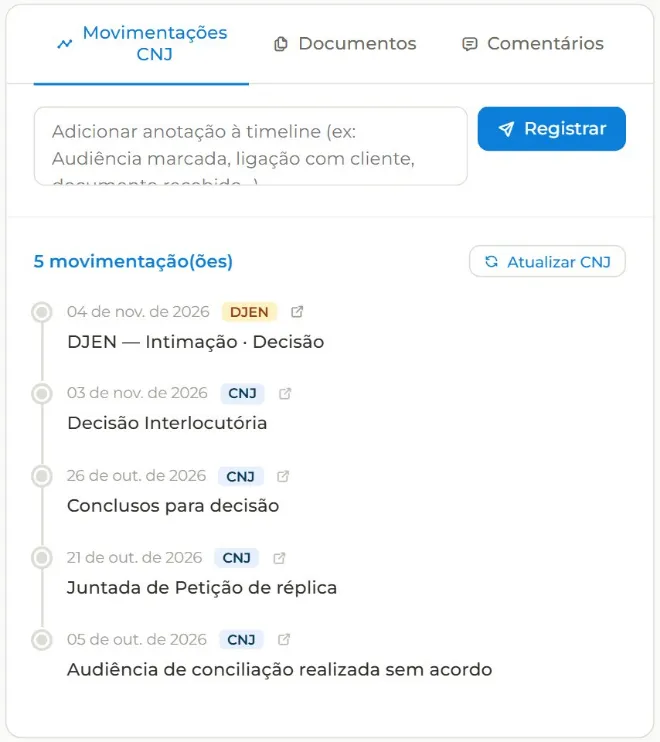
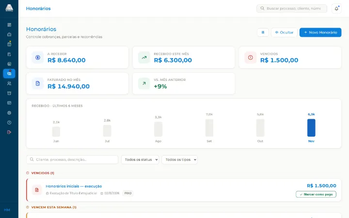
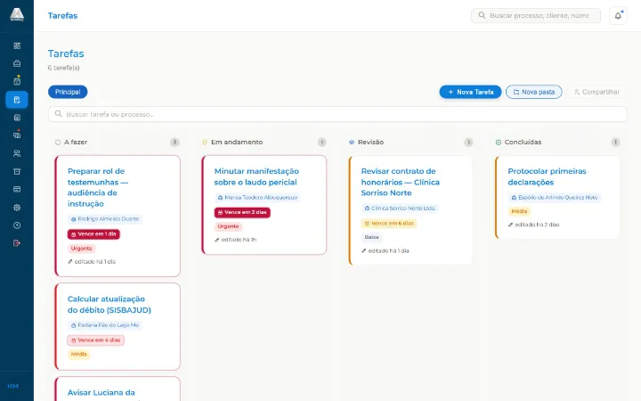
Acompanha processos em mais de 90 tribunais pelo CNJ e pelo Diário de Justiça Eletrônico
Cada processo vira uma ficha com cliente, tribunal, histórico, prazos, tarefas e honorários. Tudo o que é do mesmo caso fica junto, e você encontra em segundos.
Ao abrir o sistema, o painel do dia mostra só o que precisa da sua atenção: o que vence, o que mudou nos processos e o que a equipe tem pra fazer.
Lista em tabela ou em cartões, com filtro por área e status, favoritos no topo, a última movimentação e o próximo prazo de cada um. Precisa levar para fora? Exporte em planilha.
Prazos, audiências e lembretes no calendário, com aviso por e-mail antes do vencimento e lembretes que se repetem. Concluiu? Marque com um toque.
Tarefas em quadro, ligadas ao processo, com prazo e prioridade. Convide até 3 colaboradores e escolha se cada um pode editar ou só consultar.
Honorários fixos, por êxito, por hora ou recorrentes, com parcelas. Veja o que está a receber, o que venceu e quanto entrou nos últimos meses.
Você informa a OAB uma vez. O resto o sistema faz sozinho, todo dia.
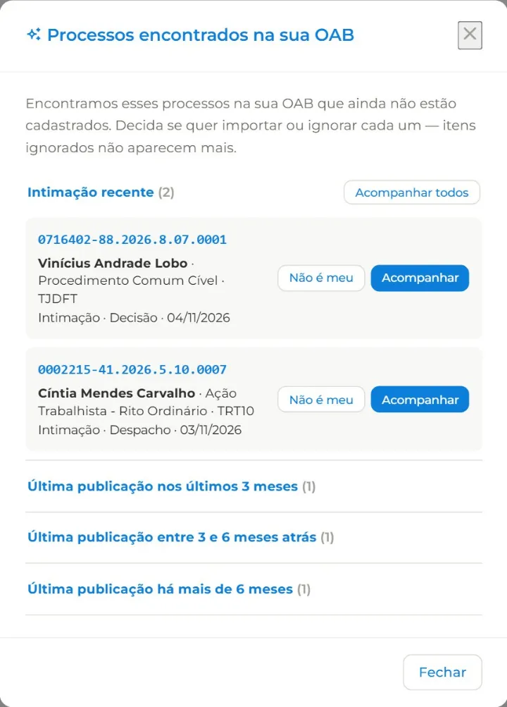
Assim que você entra, o sistema busca um ano de publicações da sua OAB e mostra os processos que ainda não estão no seu painel.
Processos, intimações, prazos, tarefas e honorários, ligados ao processo certo.
Número, partes, data e link da publicação. No mesmo dia.

Prazos, audiências, tarefas e honorários no mesmo calendário.
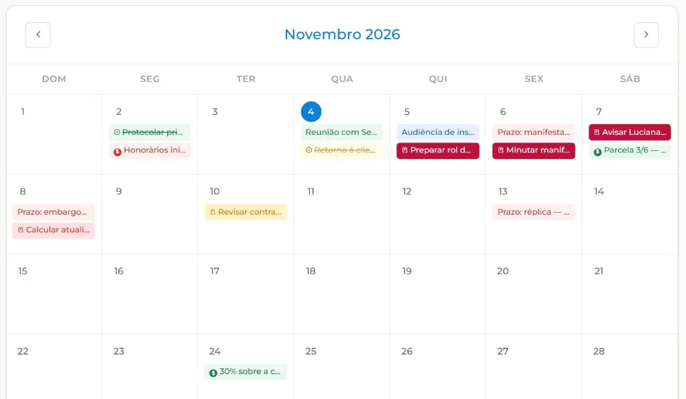
Marque como feito com um toque.
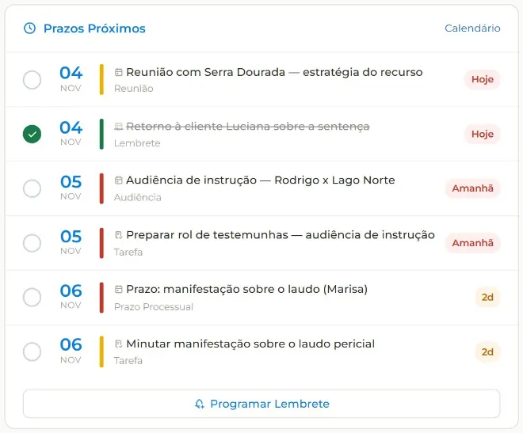
O que veio do CNJ e do Diário, e as suas anotações.
A receber, recebido no mês, vencidos e o histórico de 6 meses.
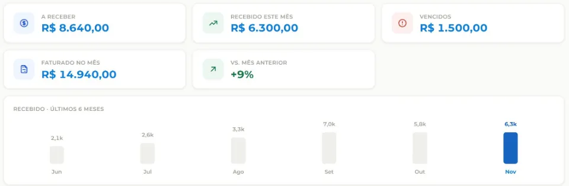
Quadro com prazo e prioridade, sem depender do WhatsApp.
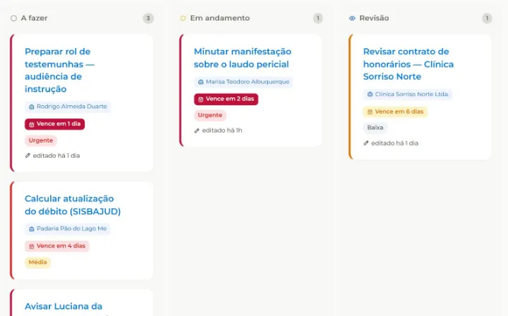
Você usa tudo por 30 dias sem pagar nada e sem cadastrar cartão. Se gostar, escolhe o período e paga uma vez só.
Menor custo por mês
R$ 418,80 pagando mês a mês
R$300
por 12 meses. Sai por R$ 25 ao mês: é como ganhar mais de 3 meses grátis.
Todos os planos incluem
Não achou a sua? Escreva para contato@meuprocesso.app.br.
Basta cadastrar o número CNJ do processo ou informar a sua OAB. O Meu Processo verifica diariamente novas movimentações em mais de 90 tribunais via CNJ DataJud e lê o DJEN, e envia um e-mail com o que mudou, sem você precisar abrir nenhum portal de tribunal.
Sim. O Meu Processo monitora processos em mais de 90 tribunais via CNJ DataJud, incluindo TJDFT, TJSP, TJRJ, todos os TRTs, TRF1 ao TRF6, STJ e STF. Também integra o DJEN para publicações via PJe.
Sim. Você busca por número de OAB, número CNJ, CPF ou nome da parte. O sistema retorna os processos vinculados e permite importar vários de uma vez.
Os e-mails saem automaticamente quando o sistema encontra novidade nos seus processos. Você também recebe um resumo pela manhã, à tarde e à noite. Funciona desde o primeiro cadastro, sem configurar nada.
Sim. Os dados são armazenados com criptografia e nenhuma informação de cliente é compartilhada com terceiros. A plataforma segue a LGPD, e você pode excluir tudo a qualquer momento.
Funciona do mesmo jeito para advogado solo. O painel, o calendário de prazos e o monitoramento já resolvem a rotina. A equipe é um recurso a mais, para quando você precisar.
Você cadastra o prazo no processo e escolhe com quantos dias de antecedência quer ser avisado: 1, 3 ou 7 dias. O e-mail vai para você e para os colaboradores ligados ao processo.
Você testa grátis por 30 dias, sem cartão de crédito. Depois, R$ 34,90 por mês, R$ 180 por 6 meses ou R$ 300 por ano, em pagamento único por período. Ver os planos.
Crie a conta, informe sua OAB e veja hoje mesmo o que o Diário publicou para você. Sem cartão de crédito.